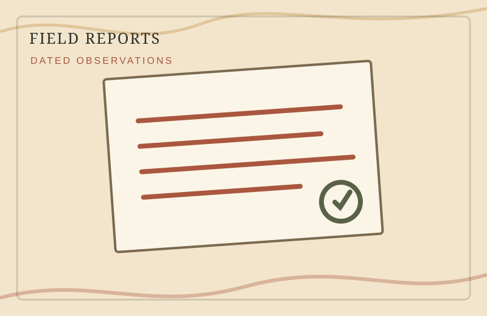

Observe
Photograph, measure, date, and note what is actually present.
Source of Truth
The master workbook, original photographs, source readings, Git history, maps, and revision notes behind the public site.
Workbook v0.2 established · FR001 photographic record expanded
Photograph, measure, date, and note what is actually present.
Place technical details, source files, questions, and corrections in the workbook.
Extract a concise Field Report that remains interesting to a casual reader.
Master Index
Immich keeps the photographs.
Git keeps the website history.
The workbook keeps the meaning.
Technical details are not discarded because they are too boring for the public page. They are moved to the right place.
This separation allows the website to remain welcoming while preserving enough evidence to understand, correct, and rebuild the record later.
